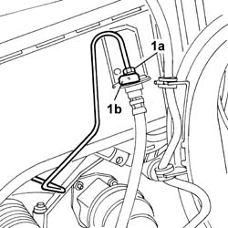
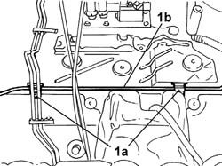

3340B57 RIGID PIPE from hydraulic CONTROL UNIT to RIGHT FRONT BRAKE - R.R. with power unit removed
- Path
- Procedures > 33 BRAKES > 3340 ANTI-LOCK BRAKING SYSTEM (A.B.S.) > 3340B ABS SYSTEM PIPES > 3340B57 RIGID PIPE from hydraulic CONTROL UNIT to RIGHT FRONT BRAKE - R.R. with power unit removed
- Kind
- repair procedure (removal / refitting; the operation number is the code)
- Applies to
- engines: 3.0 V6, 3.2 V6; all production periods
- Interactive page
- https://sloeber94.github.io/elrnDB-lThss/en/#/155789
Applies to: engines: 3.0 V6, 3.2 V6; all production periods
 Removing
Removing
 Refitting
RefittingSee in Op. 3340A12 A.B.S. hydraulic and electronic CONTROL UNIT - R.R. - Includes bleeding air
1. Undo the connector (1a), remove the spring (1b) and release the flexible section from the rigid section of the brake pipe.

Applies to: engines: 3.0 V6, 3.2 V6; all production periods
1. Release the rigid pipe (1b) from the retaining bands on the engine compartment bulkhead and remove it without damaging it.

Applies to: engines: 3.0 V6, 3.2 V6; all production periods
Refitting
Removing- Position the pipe securing it to the retaining bands on the engine compartment bulkhead.
- Connect the flexible section to the rigid section of the brake pipe.
- Tighten the connector joining the rigid section to the flexible section to torque.
 | Value - daNm | Fastening | Component | Ø |
|---|---|---|---|---|
. | 1.4 | Connector | BRAKING SYSTEM PIPE BRAKES | M10 |
See in Op. 3340A12 A.B.S. hydraulic and electronic CONTROL UNIT - R.R. - Includes bleeding air